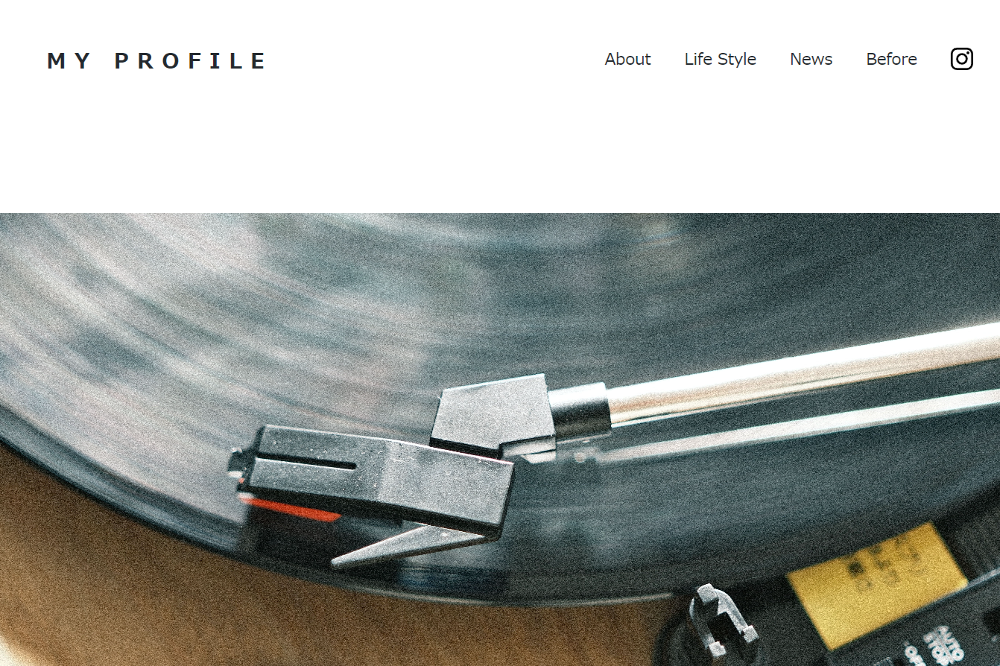

文言や写真(画像)の配置だけでなく、視覚的に興味を持っていただくサイトを作るためにjQueryを使いアニメーションも使用。余白を意識し、見る人の視野に最低限の情報しか与えないようにサイトを作成しました。
URL
個人情報が記載されているため未記載。
担当
デザイン・コーディング・撮影(MENU,HOME)・構築
サイトの目的
私がどういう人生を歩み、どういった領域に専門化しているのかを知っていただくことを目的に作成しました。
デザインについて
余白を多くとりつつ、メインビジュアルは大きく配置。そうすることで下にスクロールして本文やメッセージに辿り着けるように考え構築しました。
写真や画像を多く使うことで、見る人の目を飽きさせないようにしました。また、文章の文字数を最低限にまで削り、読み手が文章を読む時間をとらなくて良いようにしました。
モダンで現代の流行となりつつある余白に重点を置いて作成しました。
コーディングについて
余白をできるだけ増やすために、px値の構成だけでなくスマートフォンでも同様に余白をもって閲覧できるような仕組みをCSSで作成しました。